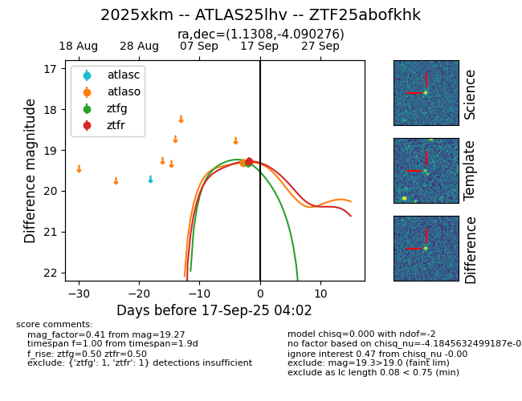

FINK: ZTF25abofkhk
Lasair: ZTF25abofkhk
ALeRCE: ZTF25abofkhk
TNS: 2025xkm
YSE: 2025xkm
ZTF25abofkhk (ztf,fink)
2025xkm (tns,yse)
ATLAS25lhv (atlas)
equatorial (ra, dec) = (1.1308,-4.09028)
galactic (l, b) = (94.9637,-64.38392)

last atlasc=19.19, atlaso=19.41, ztfg=19.37, ztfr=19.36
1 atlasc, 1 atlaso, 2 ztfg, 2 ztfr detections